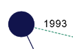
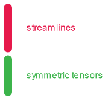

The visualization that we propose is a nonlinear ordered
representation that allows to follow the publications of an author.
It also allows you to see the topics an author has
addressed by displaying the most frequent keywords of its papers.

The circles represent the papers, they are accompanied by the
year of publication and their size is proportional to the number
of citations. Hovering the circle displays more information like
the title and the number of citations. It also highlight the
co-authors and keywords of the paper.
The squares represent the co-authors and are related to the
papers in which they participated. Hovering the square
displays more information like the name of the co-author and the
cumulative citations count of the co-author. It also highlight
papers in which they participated.

The keywords are at most twenty. These are the most recurrent
keywords in an author's work. They are extracted from the
paper's keywords title and abstract.